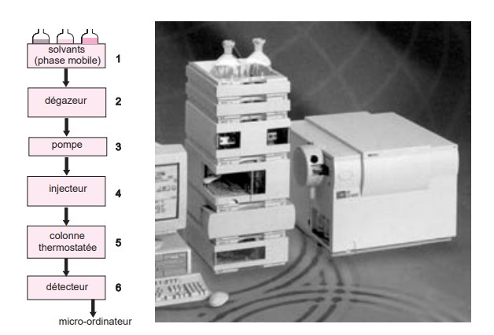

<!DOCTYPE html>
<html lang="fr">
<head>
    <meta charset="UTF-8">
    <meta name="viewport" content="width=device-width, initial-scale=1.0">
    <link rel="stylesheet" href="moncss.css">

<style>
.grid-pagetotale {
  display: grid;
  grid-template-columns: 25% 50% 25%;
}

</style>
<head>
<header>
   
   
<div id="entete">
   <div>
      <h2 id="x"> VOK-Blog  </h2> 
   </div>
   <div>
      <h3> menu </h3>
   </div>
   <div>  
      <form action="/search" method="get">
         <input type="text" id="search" name="q" placeholder="Entrez votre recherche...">
         <button type="submit">Rechercher</button>
      </form>  
   </div>
</div>
   <style>
      a:hover{ color:red }
   </style>
</header>


<body>
<div class="grid-pagetotale">
   <div>
      <ul id="li">
         <h4 id="xx"><u> Menu </u></h4>
         <li><a href="file:///C:/Users/abc/Desktop/developpement%20page%20web/mainpage.html#Accueil">Accueil >  </a></li>
         <li><a href="file:///C:/Users/abc/Desktop/developpement%20page%20web/Blog%20IAA.html" ; target="self">Blogs sur l'Agroalimentaire >  </a></li>
         <li><a href="#produits">Formations >  </a></li>
         <li><a href="#apropos">Produits entreprises >  </a></li>
         <li><a href="#contact">Affiliation >  </a></li>
         <li><a href="#contact">Contact >  </a></li>
      </ul>
   </div>   
   <div id="Blog">
      <h1 id="c1"> C'est quoi la chromatographie ? </h1>
      <p> La chromatographie est une méthode de séparation des constituants présents dans des
      mélanges variés. Elle sert en analyse pour identifier et quantifier des composés au sein
      d’échantillons divers. Le principe de base repose sur les équilibres de concentration
      qui apparaissent lorsqu’un composé est mis en présence de deux phases non miscibles.
      En chromatographie, l’une, dite stationnaire, est emprisonnée dans une colonne ou fixée sur
      un support et l’autre, dite mobile, se déplace au contact de la première. Si plusieurs composés sont présents, ils se trouvent entraînés à des vitesses différentes, provoquant leur séparation. Ce procédé hydrodynamique a donné naissance à une méthode analytique instrumentale qui a un très grand domaine d’applicabilité et par suite se trouve très répandue. Aucun
      laboratoire analysant des composés moléculaires ne peut ignorer la chromatographie.</p>
      <p> Ce procédé particulier de fractionnement est né, sous sa forme moderne, au début du
      siècle dernier des travaux du botaniste Michaël Tswett à qui on attribue également l’invention des termes de chromatographie et de chromatogramme.</p>
      <h2 id="c3"> Chromatographie liquide haute performance </h2>
      <p> Parmi les techniques chromatographiques dont la phase mobile est un liquide, la chromatographie liquide haute performance (CLHP) est la plus connue. Son champ d'application
      recouvre une grande partie du domaine de la chromatographie en phase gazeuse auquel
      s'ajoute celui de l'analyse des composés thermosensibles ou de masses moléculaires à la
      fois très grandes et même polaires. Son succès est dû à la possibilité d'agir de manière
      très précise sur la sélectivité entre les composés par le choix de la colonne et de la composition de l'éluant, c'est-à-dire en exploitant les interactions soluté/phase mobile/phase
      stationnaire. L'efficacité des colonnes est moindre qu'en CPG, mais l'utilisation de phases
      chirales ou des nouvelles phases stationnaires opérant suivant plusieurs modes, les techniques par appariement d'ions ainsi que d'interaction hydrophobe accroissent encore plus
      les possibilités de la CLHP. Enfin la miniaturisation de la technique (nanochromatographie)
      a facilité son association avec la spectrométrie de masse.
      </p>
      <h4> 2.1 L'ORIGINE DE LA CLHP </h4>
      <p> La chromatographie liquide haute performance, souvent désignée par son abréviation CLHP(HPLC en anglais), constitue une technique analytique très générale d'emploi.
      Elle dérive de la forme la plus ancienne de la chromatographie liquide sur colonne dont
      les performances, en termes de sélectivité et de résolution, se sont trouvées grandement
            améliorées par la miniaturisation et l'utilisation de phases stationnaires très élaborées.
            Ces phases, constituées de la réunion de micro-particules sphériques dont le diamètre
            est compris entre 2 et 5 micromètres ou de matériaux monolithiques poreux conduisent à
            une perte de charge importante dans la colonne. Il faut donc exercer sur la phase mobile
            une forte pression pour obtenir un débit convenable. Pour marquer cette particularité de la
            technique, la lettre P du sigle CLHP a pendant longtemps correspondu au mot pression.
            La migration forcée d'une phase liquide au contact d'une phase stationnaire se retrouve
            dans plusieurs techniques chromatographiques. La particularité de la CLHP est de faire intervenir des mécanismes d'échange soluté/phase mobile/phase stationnaire basés sur les coefficients d'adsorption ou de partage.
      </p> 
      <h4> 2.2 CONCEPTION GÉNÉRALE D'UN APPAREIL DE CLHP </h4>
      <p> Une installation de CLHP comporte divers modules spécialisés, qui se présentent dans des
           boîtiers distincts ou intégrés dans un même châssis pour des raisons de moindre encombrement (fig. 2.1).
           Ces modules sont reliés entre eux par l'intermédiaire de canalisations de très faible diamètre interne (0,1 mm) pour assurer la circulation de la phase mobile. Elles peuvent être
           en acier inoxydable ou en PEEK® (ou polyether-etherketone), un polymère souple et coloré
           qui résiste aux solvants usuels, même sous des pressions élevées (350 bars).
           L'écoulement des faibles débits obéit à la loi de Poiseuille. La vitesse de la phase mobile
           est maximum au centre des canalisations et nulle au contact des parois. Une dispersion des
           composés se produit donc inévitablement. Pour améliorer les séparations on fait donc en
           sorte que le volume de phase mobile hors-colonne soit le plus réduit possible (10 % du
           volume mort de la colonne).   
      </p>
      <figure id="vv">
          
         <figcaption>(fig. 2.1)</figcaption>
      </figure>
   </div>
   <div>
      <ul>
         <h3 id="xx"> <u>Sommaire</u> </h3>
         <p><a href="#c1"> Généralité </a></p>
         <p><a href="#c2">Chromatographie en phase gazeuse(CPG) </a></p>
         <p><a href="#c3"> Chromatographie liquide Haute Performance(HPLC)</a></p>
         <p><a href="#c4">Chromatographie Ionique</a></p>
         <p><a href="#c5">Chromatographie Planaire</a></p>
         <p><a href="#c6">Chromatographie supercritique</a></p>
         <p><a href="#c7">Chromatographie Capillaire </a></p>
      </ul>  
   </div>   
</div>

</body>

<div>
   <form action="commentaires.php"  method="post">
      <h3> <label for="fname">votre nom(facultatif)</label><br> </h3>
      <input type="text" id="fname" name="fname" ><br>
      <h3><label for="comment">Commentaire:</label><br></h3>
      <textarea id="comment" name="message" rows="6" cols="70"> Ecrivez votre commentaire ici SVP. </textarea><br>
      <input type="submit" value="Soumettre">
      <br>
    </form> 

    
</div>

<div>

</div>
<footer id="kc">
<div id="before-footer">
   <div>
        <p> Bonjour</p>
   </div>
   <div>
      <p> Autres articles qui vous interessent</p>
   </div>
   <div> 
      <p> Bienvenue </p>
   </div>
</div>
<div class="grid-pagetotale">
   <div>
      <p>&copy; 2023 Mon Site Web. Tous droits réservés.</p>
      <p> God Bless You </p>
   </div>
   <div>
      <p> <a href="https://www.linkedin.com/in/victor-ouokoro-ko%C3%AFvogui-b046bb283?utm_source=share&utm_campaign=share_via&utm_content=profile&utm_medium=ios_app" ; target="_blank">Acceder à mon compte linked-in</a> </p>
      <p> <a href="https://web.facebook.com/?ref=homescreenpwa&_rdc=1&_rdr" ; target="_blank">Acceder à ma page Facebook</a></p>
   </div>
   <div>
      <p> IAV Hassan II </p>
      <p> Guinee Conakry.gn </p>
   </div>
</div>
</footer>


</html>